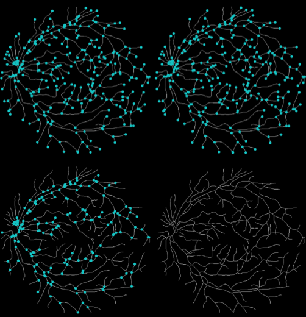

2018
Second Prize of the 9th Blue Bridge Cup National Software Professional
Design and Entrepreneurship Competition Finals

Mingzhe Ruan, Xingxing Ren, Guangxu Li, Philip O. Ogunbona and Jun Wu
International Conference on Biomedical Engineering and Bioinformatics(ICBEB) 2018
[pdf]
K-Core Graph-Based Retinal Vascular Registration
Mingzhe Ruan, Xingxing Ren, Guangxu Li, Philip O. Ogunbona and Jun Wu
International Conference on Biomedical Engineering and Bioinformatics(ICBEB) 2018
[pdf]